On the streets of Italy, one photographer writes poetry with light and weaves drama with shadow. Alessandro Deluigi is a creator who loves light and shadow. He turns familiar city corners into a visual stage full of surreal beauty. His lens seems to carry its own filter. It always catches shadows stretched long by the low sun, light beams cut by arcades, and perfect frames made by hurrying pedestrians. Deluigi’s work has the classical beauty of Renaissance painting. It also carries the fresh breath of the modern street. He often waits at dawn and dusk. He waits for a figure, a beam of light, a chance meeting. It is like the light through the colonnade in An Afternoon in Milan, or the blurred figure in Shadows of Venice that seems to step out of a painting. He works with a Leica and a fixed lens. He rejects heavy post-processing. He believes real photography is waiting in the right place for a miracle. His photos are more than a record. They are a quiet conversation with the city and the light. As he says: The best photos are not far away. They are in the place you pass every day but never truly see. Deluigi’s work reminds us that life does not lack beauty. It lacks the gaze that finds beauty.
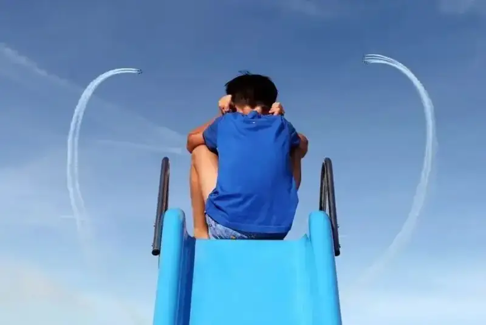
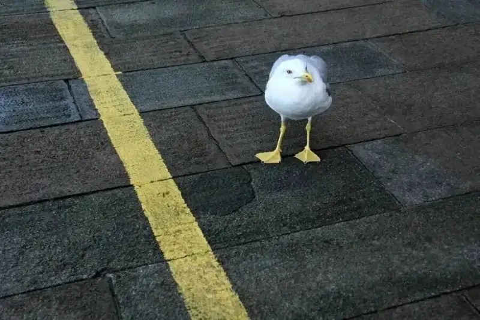
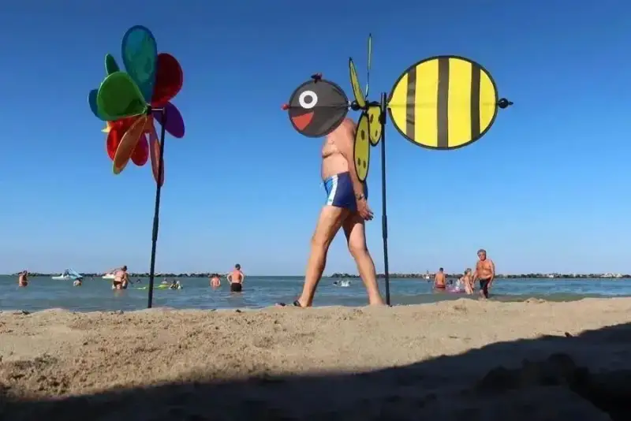
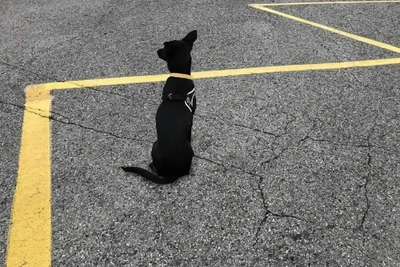
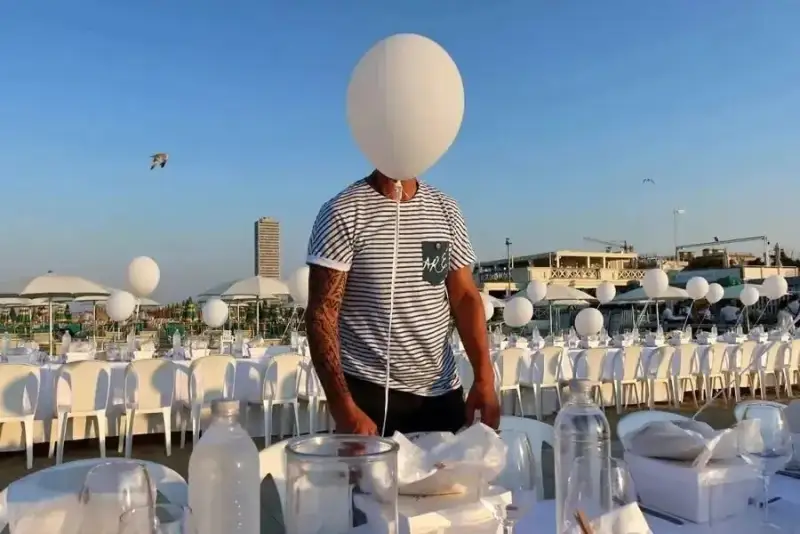
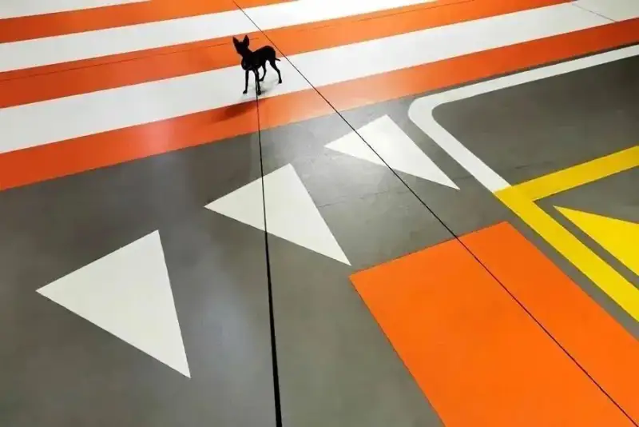
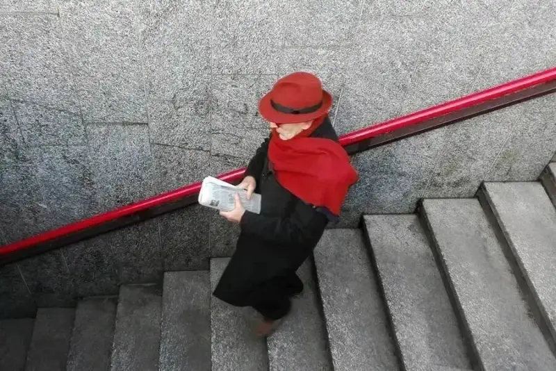
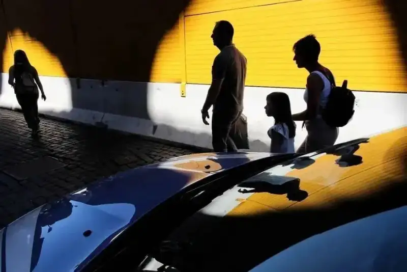
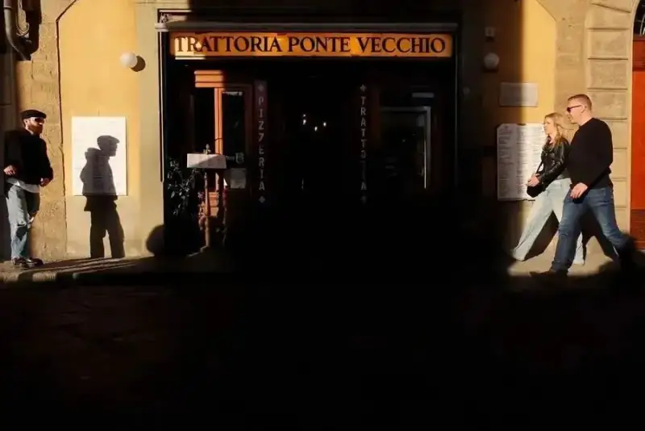
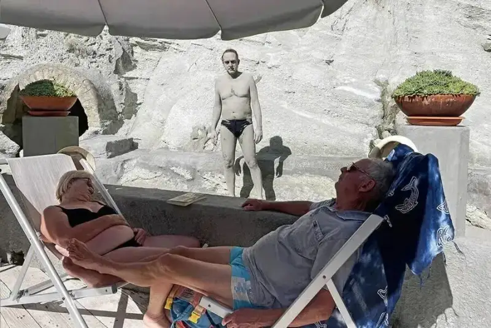
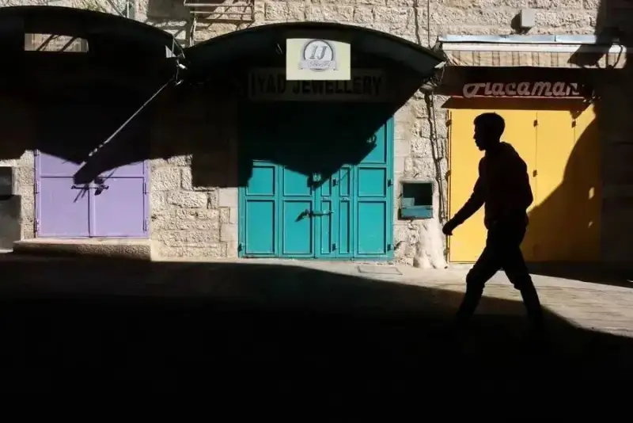
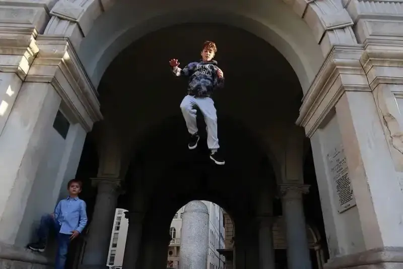
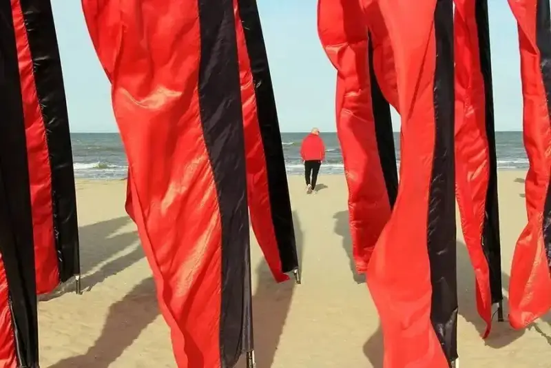
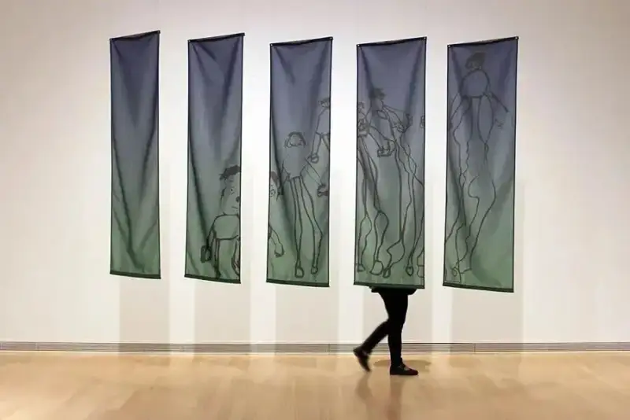